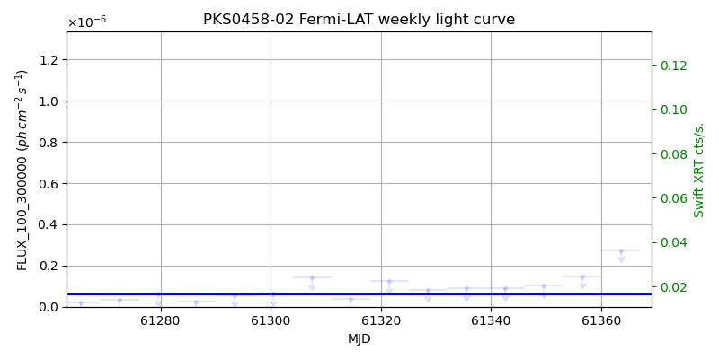
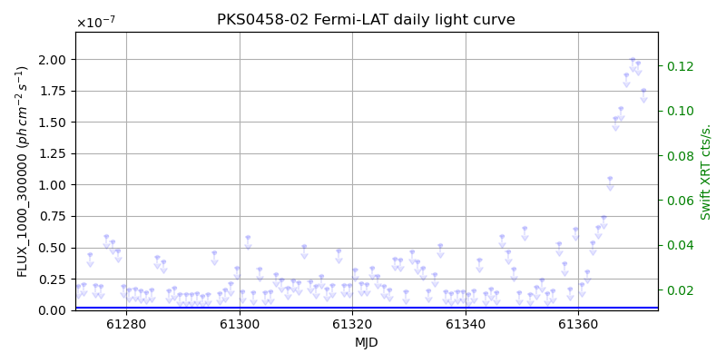

LAT Lightcurve site: https://fermi.gsfc.nasa.gov/ssc/data/access/lat/msl_lc/source/NRAO_190
Swift site: https://www.swift.psu.edu/monitoring/source.php?source=PKS0458-02
NED: Query
Time of last update of this page: UT: 2026-11-28 16:15 (MJD: 61372.677)
| Property | Value |
|---|---|
| R.A. | 4:42:38.64 |
| Dec. | -0:17:42.0 |
| z | 0.844 |
| 3FGL SpectrumType | PowerLaw |
| 3FGL PL Index | 2.41 |
| 3FGL Flux_100_300000 | 6.03e-08 1 / (s cm2) |
| 3FGL Flux_1000_300000 | 2.33e-09 1 / (s cm2) |
| 3FGL Flux >200 GeV | 1.30e-12 1 / (s cm2) |
| 3FGL Extrap. Crab >200 GeV | 0.01 |
| 3FGL Flux After EBL Absorption >200GeV | 4.11e-14 1 / (s cm2) |
| 3FGL EBL Crab Fraction >200GeV | 0.00 |
| MJD | dMJD | Flux | dFlux | Frac3FGL | FracCrab>200GeV | EBLFracCrab>200GeV |
|---|---|---|---|---|---|---|
| 61367.50 | 0.50 | 3.25e-06 | 0.00e+00 | 0.00 | 0.00 | 0.00 |
| 61368.50 | 0.50 | 1.61e-06 | 0.00e+00 | 0.00 | 0.00 | 0.00 |
| 61369.50 | 0.50 | 1.01e-06 | 0.00e+00 | 0.00 | 0.00 | 0.00 |
| 61370.50 | 0.50 | 1.18e-06 | 0.00e+00 | 0.00 | 0.00 | 0.00 |
| 61371.50 | 0.50 | 4.79e-06 | 0.00e+00 | 0.00 | 0.00 | 0.00 |

| MJD | dMJD | Flux | dFlux | Frac3FGL | FracCrab>200GeV | EBLFracCrab>200GeV |
|---|---|---|---|---|---|---|
| 61335.50 | 3.50 | 8.85e-08 | 0.00e+00 | 0.00 | 0.00 | 0.00 |
| 61342.50 | 3.50 | 8.93e-08 | 0.00e+00 | 0.00 | 0.00 | 0.00 |
| 61349.50 | 3.50 | 1.04e-07 | 0.00e+00 | 0.00 | 0.00 | 0.00 |
| 61356.50 | 3.50 | 1.48e-07 | 0.00e+00 | 0.00 | 0.00 | 0.00 |
| 61363.50 | 3.50 | 2.74e-07 | 0.00e+00 | 0.00 | 0.00 | 0.00 |

| MJD | dMJD | Flux | dFlux | Frac3FGL | FracCrab>200GeV | EBLFracCrab>200GeV |
|---|---|---|---|---|---|---|
| 61367.50 | 0.50 | 1.61e-07 | 0.00e+00 | 0.00 | 0.00 | 0.00 |
| 61368.50 | 0.50 | 1.87e-07 | 0.00e+00 | 0.00 | 0.00 | 0.00 |
| 61369.50 | 0.50 | 2.00e-07 | 0.00e+00 | 0.00 | 0.00 | 0.00 |
| 61370.50 | 0.50 | 1.97e-07 | 0.00e+00 | 0.00 | 0.00 | 0.00 |
| 61371.50 | 0.50 | 1.75e-07 | 0.00e+00 | 0.00 | 0.00 | 0.00 |

| MJD | dMJD | Flux | dFlux | Frac3FGL | FracCrab>200GeV | EBLFracCrab>200GeV |
|---|---|---|---|---|---|---|
| 61335.50 | 3.50 | 1.03e-08 | 0.00e+00 | 0.00 | 0.00 | 0.00 |
| 61342.50 | 3.50 | 4.93e-09 | 0.00e+00 | 0.00 | 0.00 | 0.00 |
| 61349.50 | 3.50 | 1.70e-08 | 0.00e+00 | 0.00 | 0.00 | 0.00 |
| 61356.50 | 3.50 | 1.15e-08 | 0.00e+00 | 0.00 | 0.00 | 0.00 |
| 61363.50 | 3.50 | 6.29e-09 | 0.00e+00 | 0.00 | 0.00 | 0.00 |
--------------------------------------------------------- Using user-supplied coords: 4:42:38.64 -0:17:42.0 2000 --------------------------------------------------------- FLWO UT night of: 2026-11-29 Local Sid. @ Midnight: 04:08 Sunset (-15.0) (local, UT): 18:31 01:31 Sunrise (-15.0) (local, UT): 05:53 12:53 Moonrise (local, UT): 21:57 04:57 Moonset (local, UT): Moon phase: 0.72 --------------------------------------------------------- AzTime LSID UT Obj_el Obj_az Mn_el Mn_az Sep. --------------------------------------------------------- 18:31 22:39 01:31 -0.5 89.6 -32.9 32.1 62.5 19:01 23:09 02:01 5.4 93.5 -29.4 38.9 62.9 19:31 23:39 02:31 11.7 97.6 -25.4 45.0 63.2 20:01 00:09 03:01 18.0 101.8 -21.0 50.6 63.5 20:31 00:39 03:31 24.2 106.4 -16.2 55.6 63.9 21:01 01:09 04:01 30.2 111.4 -11.1 60.2 64.2 21:31 01:39 04:31 36.1 117.1 -5.4 64.5 64.5 22:01 02:09 05:01 41.6 123.6 0.4 68.5 64.8 22:31 02:39 05:31 46.7 131.4 5.8 72.2 65.1 23:01 03:10 06:01 51.1 140.6 11.6 75.8 65.3 23:31 03:40 06:31 54.7 151.6 17.5 79.4 65.6 00:01 04:10 07:01 57.1 164.3 23.6 82.9 65.8 00:31 04:40 07:31 58.1 178.2 29.7 86.5 66.0 01:01 05:10 08:01 57.5 192.3 35.8 90.3 66.2 01:31 05:40 08:31 55.4 205.4 42.0 94.4 66.4 02:01 06:10 09:01 52.1 216.8 48.1 99.1 66.6 02:31 06:40 09:31 47.8 226.5 54.2 104.7 66.8 03:01 07:10 10:01 42.9 234.6 60.1 111.7 67.0 03:31 07:40 10:31 37.5 241.4 65.6 121.1 67.1 04:01 08:10 11:01 31.7 247.3 70.5 134.7 67.3 04:31 08:40 11:31 25.7 252.4 74.0 154.7 67.5 05:01 09:11 12:01 19.5 257.1 75.2 181.1 67.6 05:31 09:41 12:31 13.3 261.4 73.6 206.8 67.8 05:53 10:02 12:53 8.7 264.3 71.0 221.2 67.9 --------------------------------------------------------- Dark hours >55 deg.: 0.00